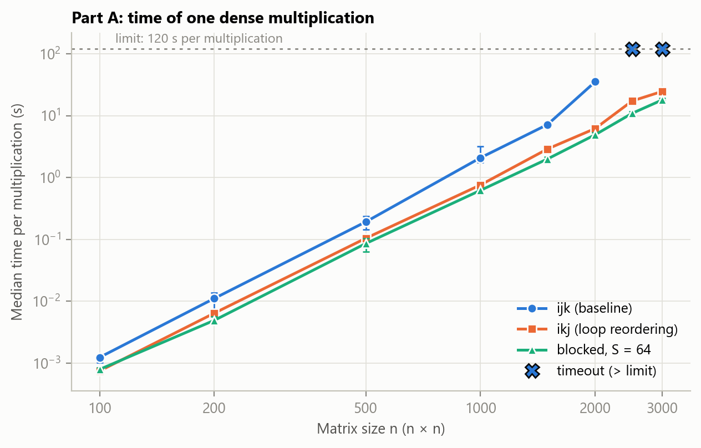
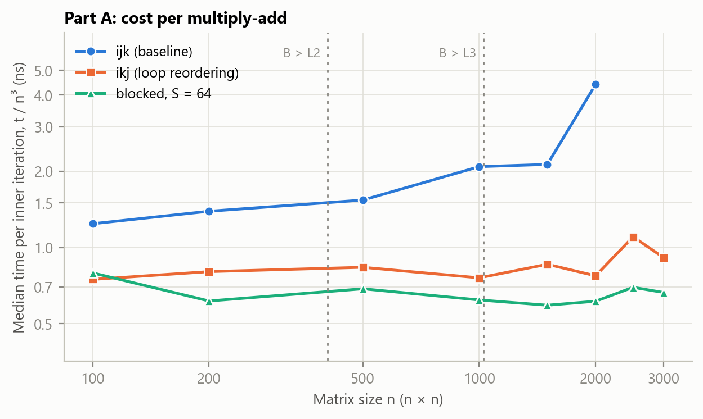
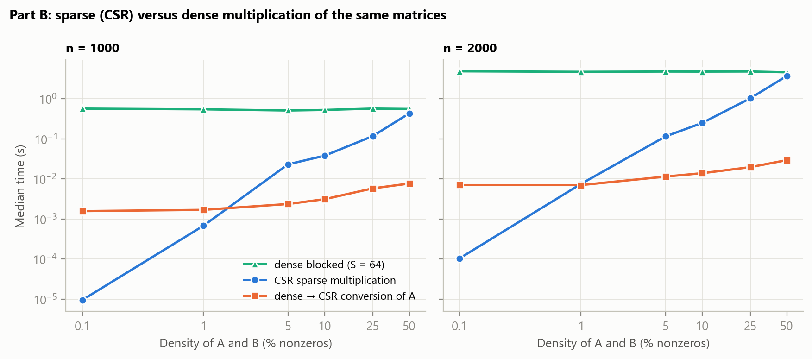

-O2), how two optimisations change dense matrix multiplication and when a sparse representation pays off.
Part A compares the baseline i-j-k loop with loop reordering (i-k-j) and cache blocking (64 × 64 tiles) for n = 100–3000. All three return bit-identical results. Loop reordering is 1.7–5.7× faster than the baseline and blocking 1.6–7.2×,
with the largest gains at the largest sizes; the baseline exceeded the 120 s budget at n = 2500, while both optimised versions completed n = 3000 in 24.6 s and 17.9 s.
Part B multiplies randomly scattered sparse matrices (0.1–50 % nonzeros, n = 1000 and 2000) with an own CSR implementation of Gustavson’s algorithm and compares it with dense blocked multiplication of the same matrices.
CSR was faster at every tested density, by 46,450× at 0.1 % but only 1.2× at 50 % (n = 2000), because each useful product costs it 3–20 times more than a dense multiply-add and because the product becomes dense: at 5 % density, more than 90 % of the entries of C are nonzero.
The conversion from dense to CSR is measured separately; it dominates only at the lowest densities. Conclusions are limited to these implementations, random uniform sparsity and this machine.Assignment 1 measured the textbook triple loop in Python, Java and C and found that its cost per multiply-add rises with the matrix size, which suggested, without proving it, a memory-access effect [1]. This study keeps one language, C, and asks two questions, as the brief requires:
Expectations (from the course material and the literature [2, 3]; written after a short pilot that was used only to set sizes and limits): the reordered loop should help most once matrix B no longer fits in the caches, because it reads B along rows instead of columns; blocking should add little to that at moderate sizes but keep the cost per operation flatter at large sizes; CSR should win clearly at very low densities, where it skips almost all the work, and lose at high densities, where indexing overheads remain and the product itself becomes dense.
Loop reordering. For C = AB the three loops can be nested in any order without changing the result. The baseline i-j-k order computes one element of C at a time with an inner loop that walks a column of B (addresses n doubles apart), so it touches a new cache line at every step. In the i-k-j order the inner loop updates a whole row of C with one element of A times a row of B, so both B and C are read with unit stride [2, Sec. 6.2.1].
Cache blocking (tiling). The matrices are processed in S × S tiles so that the tile of B being used is reused for several rows of A while it is still in cache [2, Sec. 6.2.1]. Here the tiles are visited in the order ii-kk-jj and the i-k-j order is used inside a tile. S = 64 was fixed before the pilot: one 64 × 64 tile of doubles is 32 KiB, which fits in the 48 KiB level-1 data cache of the test CPU.
Sparse matrices and CSR. Density is the percentage of nonzero entries and sparsity the percentage of zeros. Compressed sparse row (CSR) stores, for each row, the column index and value of its nonzeros, plus one row-pointer array: 12 bytes per nonzero (8-byte value, 4-byte index) and 8(n+1) bytes, against 8n² bytes for the dense matrix [4]. CSR × CSR products are computed with Gustavson’s row-by-row algorithm [5], whose work is proportional to the number of nonzero products rather than to n³: with independent random nonzeros of density d, about d²n³ products. The product can be much denser than the inputs: an entry of C is nonzero if any of its n products is, which happens with probability 1 − (1 − d²)n.
| Method | Code | What changes with respect to the baseline | Expected effect |
|---|---|---|---|
| ijk (baseline) | mm_ijk, src/c/dense.c | nothing: the validated Assignment 1 C kernel [1], copied unchanged | – |
| ikj (loop reordering) | mm_ikj | the two inner loops are swapped; C is accumulated in place, so it is zeroed first (inside the timed kernel) | B and C read with unit stride: far fewer cache misses for large n |
| blocked (cache blocking) | mm_blocked | ikj applied to 64 × 64 tiles; tiles visited ii-kk-jj; C zeroed inside the timed kernel | a tile of B is reused from cache; flatter cost per operation at large n |
| CSR (sparse) | spgemm, src/c/sparse.c | own CSR format and Gustavson product (no library): symbolic pass to size C, then numeric pass with a dense accumulator | work ∝ nonzero products; fast at low density, overheads at high density |
For every element C[i][j] all dense methods add the products aikbkj in the same order (k = 0, 1, …, n−1, starting from 0), and the CSR method adds the same products without the exact zeros, so all methods return
bit-identical results. GCC enables loop vectorisation at -O2 [6]; its report (-fopt-info-vec-optimized, saved in build/dense-vectorisation.txt) lists no vectorised loop in dense.c, so the dense methods differ only in their memory-access order, not in SIMD use.
The CSR kernel stores the column indices of each row of C in first-touch order (unsorted) and its timed region includes both passes, the allocation of C and freeing the previous C; its work arrays (three arrays of length n) are allocated once, outside the timer.
Part A uses the dense inputs of Assignment 1, uniform in [0, 1), generated with the same rule (NumPy default_rng([20261012, n, which])); the files are byte-identical to Assignment 1’s (checked against its SHA-256 hashes). Sizes: n = 100, 200, 500, 1000, 1500, 2000, 2500, 3000.
Part B uses new matrices for n = 1000, 2000 and densities 0.1 %, 1 %, 5 %, 10 %, 25 %, 50 %: every entry is nonzero independently with probability d (uniformly scattered positions, no structure) and nonzero values are uniform in (0, 1];
seed default_rng([20261026, n, d·10⁶, which]). Each matrix is written twice with the same logical content, as a dense file with explicit zeros (read by the dense comparator) and as a CSR file (read by the sparse method); the actual nonzero counts are reported in Table 6.
HP 250 G8 Notebook PC, 11th Gen Intel(R) Core(TM) i5-1135G7 @ 2.40GHz (4 cores, 8 logical processors; L1d 48 KiB and L2 1.25 MiB per core, L3 8 MiB shared), 15.7 GB RAM, Windows 11 Pro (build 26300), AC power, “Balanced” power plan; the same laptop as Assignment 1. One kernel thread; no numerical library.
scripts/run_tests.py checks: identity and zero matrices (bit-exact); random matrices against NumPy with absolute and relative tolerance 10−9 (as in Assignment 1), including sizes that are and are not multiples of the tile size (10, 63, 64, 65, 100, 130, 300) and tile sizes 32 and 64;
that every optimised method is bit-identical to the baseline; that the C dense → CSR conversion writes byte-identical files to an independent Python writer; and that the CSR product matches NumPy, is bit-identical to the dense baseline and has exactly as many stored entries as NumPy’s product has nonzeros,
for densities 0 % (empty), identity, 1 %, 10 %, 50 % and 100 %.
scripts/harness.py).
A batch runs m multiplications (m doubled until a batch lasts ≥ 0.2 s); calibration and warm-up batches are discarded from the statistics; then 5–10 measured batches. The median and the interquartile range (IQR, shown as [Q1–Q3]) of all measured batches of all launches are reported.PeakWorkingSetSize [7]), one value per launch; it includes the runtime and the input data.All 115 checks passed (115/115; results/correctness.csv). The two optimised dense methods and the CSR method returned matrices bit-identical to the baseline in every test, the C conversion produced byte-identical CSR files to the independent Python writer,
and the number of stored entries of every CSR product equalled the number of nonzeros of NumPy’s product. The checksum printed after every timed batch was constant within each launch.
Table 2 and Figure 1 give the time of one multiplication. Both optimisations are faster than the baseline at every size, and the gap grows with n (Table 3): loop reordering gives 1.7× at n = 100, 2.7× at 1000 and 5.7× at 2000; blocking gives 1.6×, 3.4× and 7.2×. Blocking is faster than reordering alone at every size from 200 on, by 1.22–1.58×. The baseline was the only method to exceed the budget: the largest size it completed was n = 2000. Its first multiplication at n = 2500 completed in 105 s (a calibration batch, so not counted as a measurement); the next one ran past 120 s and the launch was stopped. Reordering and blocking both completed the largest declared size, n = 3000, in 24.6 s and 17.9 s.
Figure 2 shows why. The baseline’s time per multiply-add, t/n³, grows from 1.24 ns at n = 100 to 2.09 ns at 1000 and 4.40 ns at 2000, as in Assignment 1. For reordering it stays between 0.75 and 1.10 ns over the whole range, and for blocking between 0.59 and 0.79 ns: with unit-stride access the cost per operation no longer depends much on whether B fits in the caches.
Variability. At n ≤ 1000 the two launches of a configuration often disagreed: by up to 1.9× for the baseline and up to 1.7× for the optimised methods (Appendix A); for the baseline the slower launch was always the one that started with more background load on the laptop. At n ≥ 1500 the launches of every method agree within 13 %. The speed-ups for n ≤ 1000 are therefore uncertain by up to that factor; those for n ≥ 1500, including the largest ones, are robust.
| n | ijk (baseline) | ikj | blocked (S = 64) |
|---|---|---|---|
| 100 | 1.24 ms [1.02 ms–1.4 ms] | 748 µs [648 µs–792 µs] | 794 µs [758 µs–852 µs] |
| 200 | 11.1 ms [7.2 ms–13.8 ms] | 6.43 ms [5.91 ms–7.41 ms] | 4.92 ms [4.5 ms–5.65 ms] |
| 500 | 192 ms [143 ms–238 ms] | 104 ms [76.4 ms–119 ms] | 85.9 ms [63.4 ms–104 ms] |
| 1000 | 2.09 s [1.76 s–3.16 s] | 759 ms [715 ms–852 ms] | 621 ms [541 ms–634 ms] |
| 1500 | 7.18 s [6.83 s–7.61 s] | 2.9 s [2.64 s–2.97 s] | 2 s [1.96 s–2.16 s] |
| 2000 | 35.2 s [34.6 s–37.5 s] | 6.19 s [6.08 s–6.57 s] | 4.91 s [4.66 s–5.37 s] |
| 2500 | timeout (> 120 s) | 17.2 s [15.6 s–17.2 s] | 10.9 s [10.9 s–11.8 s] |
| 3000 | timeout (> 120 s) | 24.6 s [24.2 s–24.8 s] | 17.9 s [17.6 s–19.3 s] |


| n | ijk ÷ ikj | ijk ÷ blocked | ikj ÷ blocked |
|---|---|---|---|
| 100 | 1.66× | 1.56× | 0.94× |
| 200 | 1.73× | 2.26× | 1.31× |
| 500 | 1.84× | 2.24× | 1.22× |
| 1000 | 2.75× | 3.36× | 1.22× |
| 1500 | 2.48× | 3.60× | 1.45× |
| 2000 | 5.70× | 7.18× | 1.26× |
| 2500 | – | – | 1.58× |
| 3000 | – | – | 1.37× |
The tile size S = 64 was fixed before measuring. Table 4 shows how the blocked method responds to other tile sizes (one launch each, run after the main comparison). S = 256 was fastest at both sizes, about 25–38 % faster than S = 64, and S = 64 was the slowest of the five in this run. However, the same S = 64 configuration measured in the main comparison took 621 ms at n = 1000 and 4.91 s at n = 2000, against 784 ms and 5.74 s here, a run-to-run difference of the same size as the differences between tile sizes. The data therefore suggest that larger tiles may be slightly better on this machine, but they do not establish a best tile size; a properly repeated tuning experiment would be needed.
| Tile size S | n = 1000 | n = 2000 |
|---|---|---|
| 16 | 575 ms (0.57 ns) | 5.01 s (0.63 ns) |
| 32 | 577 ms (0.58 ns) | 4.67 s (0.58 ns) |
| 64 | 784 ms (0.78 ns) | 5.74 s (0.72 ns) |
| 128 | 603 ms (0.60 ns) | 4.9 s (0.61 ns) |
| 256 | 486 ms (0.49 ns) | 4.31 s (0.54 ns) |
Table 5 and Figure 3 compare, for the same logical matrices, the CSR multiplication with the dense blocked method. The dense time does not depend on the density (514 ms–573 ms at n = 1000, 4.62 s–4.89 s at 2000), because it performs all n³ multiply-adds whatever their values. The CSR time grows with the number of nonzero products and was lower than the dense time at every tested density, but the advantage falls from 60,037× and 46,450× at 0.1 % to 4.8× and 4.7× at 25 % and to 1.29× and 1.23× at 50 % (n = 1000 and 2000). Densities above 50 % were not tested, so no crossover point was measured.
Cost per useful operation. Table 5 also gives the CSR time per nonzero product: 1.7–13.1 ns, against 0.51–0.61 ns per multiply-add for the dense method. Each useful product is 3–20 times more expensive in CSR, because of the indirect index accesses, the scattered updates of the accumulator, the symbolic pass and writing the output. CSR wins because it performs far fewer operations, not because each is cheaper: at 50 % density it performs about 25 % of the dense work at roughly three times the cost per operation. The cost per product is highest at the lowest densities, where per-row overheads (resetting markers, empty rows) are no longer amortised.
Output fill-in. The product is much denser than the inputs (Table 6). With 1 % nonzeros in A and B, C has 9.5 % nonzeros at n = 1000 and 18.4 % at 2000; at 5 % input density it has 92.0 % and 99.3 %, and from 10 % on C is effectively full (100.00 % at n = 2000). This matches the estimate 1 − (1 − d²)n of Section 2, and it means that for these random matrices the same density of zeros gives a denser result, and less advantage, the larger n is.
Conversion cost. Converting one input from dense to CSR took 1.58 ms–7.72 ms at n = 1000 and 7.07 ms–29.6 ms at 2000, because it has to read all n² entries. At 0.1 % density this is about 166× (n = 1000) and 67× (n = 2000) the multiplication itself, at 1 % between 0.9× and 2.5× of it, and from 5 % on less than 10 % of it. Only matrix A was converted in the measurements; converting both inputs would take about twice as long (B has the same size and nearly the same nonzero count), and even with that cost CSR stays faster than dense at every tested density (Table 5, last column).
Memory. Table 6 gives the peak working set. At low density the CSR process needs a fraction of the dense one (for example 16.5 vs 27.7 MiB at n = 1000 and 5 %, and 14.2 vs 96.3 MiB at n = 2000 and 1 %). The saving shrinks as the density grows, mostly because of the output: once C is full, its CSR form takes 12 bytes per entry against 8 in dense form. At 50 % density the two processes need the same memory (96.4 vs 96.3 MiB at n = 2000).
| n | Density | Dense blocked | CSR | Dense ÷ CSR | CSR ns per nonzero product | Convert A | CSR + convert A and B (est.) | Dense ÷ (CSR + conv.) |
|---|---|---|---|---|---|---|---|---|
| 1000 | 0.1 % | 572 ms | 9.53 µs | 60,037.0× | 9.4 | 1.58 ms | 3.17 ms | 180.5× |
| 1000 | 1 % | 550 ms | 681 µs | 807.1× | 6.8 | 1.7 ms | 4.08 ms | 134.6× |
| 1000 | 5 % | 514 ms | 23.3 ms | 22.0× | 9.2 | 2.38 ms | 28.1 ms | 18.3× |
| 1000 | 10 % | 531 ms | 38.2 ms | 13.9× | 3.8 | 3.14 ms | 44.5 ms | 11.9× |
| 1000 | 25 % | 573 ms | 118 ms | 4.8× | 1.9 | 5.85 ms | 130 ms | 4.4× |
| 1000 | 50 % | 562 ms | 436 ms | 1.3× | 1.7 | 7.72 ms | 452 ms | 1.2× |
| 2000 | 0.1 % | 4.89 s | 105 µs | 46,450.2× | 13.1 | 7.07 ms | 14.2 ms | 343.3× |
| 2000 | 1 % | 4.75 s | 7.54 ms | 630.4× | 9.3 | 7.07 ms | 21.7 ms | 219.3× |
| 2000 | 5 % | 4.82 s | 116 ms | 41.5× | 5.8 | 11.5 ms | 139 ms | 34.7× |
| 2000 | 10 % | 4.81 s | 251 ms | 19.2× | 3.1 | 14 ms | 278 ms | 17.3× |
| 2000 | 25 % | 4.84 s | 1.04 s | 4.7× | 2.1 | 19.8 ms | 1.08 s | 4.5× |
| 2000 | 50 % | 4.62 s | 3.75 s | 1.2× | 1.9 | 29.6 ms | 3.81 s | 1.2× |

| n | Density | nnz(A) | nnz(B) | nnz(C) | Density of C | Peak memory CSR (MiB) | Peak memory dense (MiB) |
|---|---|---|---|---|---|---|---|
| 1000 | 0.1 % | 1,005 | 991 | 1,016 | 0.1 % | 5.0 | 27.7 |
| 1000 | 1 % | 9,933 | 10,107 | 95,338 | 9.5 % | 6.6 | 27.7 |
| 1000 | 5 % | 50,440 | 50,075 | 920,215 | 92.0 % | 16.5 | 27.7 |
| 1000 | 10 % | 100,204 | 99,916 | 999,952 | 100.0 % | 18.6 | 27.7 |
| 1000 | 25 % | 250,692 | 250,899 | 1,000,000 | 100.0 % | 22.0 | 27.7 |
| 1000 | 50 % | 499,459 | 499,289 | 1,000,000 | 100.0 % | 27.7 | 27.7 |
| 2000 | 0.1 % | 3,958 | 4,065 | 8,033 | 0.2 % | 5.2 | 96.3 |
| 2000 | 1 % | 40,391 | 40,260 | 736,231 | 18.4 % | 14.2 | 96.3 |
| 2000 | 5 % | 200,279 | 200,063 | 3,973,230 | 99.3 % | 54.9 | 96.3 |
| 2000 | 10 % | 399,864 | 400,658 | 4,000,000 | 100.0 % | 59.8 | 96.3 |
| 2000 | 25 % | 1,000,870 | 998,970 | 4,000,000 | 100.0 % | 73.5 | 96.3 |
| 2000 | 50 % | 1,999,270 | 2,000,430 | 4,000,000 | 100.0 % | 96.4 | 96.3 |
Part A. Both optimisations target the same weakness of the baseline: its inner loop reads B with a stride of n doubles, so for large matrices almost every access misses the caches [2]. Reordering the loops removes the stride and gives most of the gain (5.7× at n = 2000); blocking adds a further 1.22–1.58× at n ≥ 1000 by reusing tiles of B from the cache. Since GCC vectorised none of the dense loops and all methods perform the same additions in the same order, the measured differences come from the memory-access pattern. This also supports the hypothesis left open in Assignment 1 [1], that the rise of t/n³ there was a memory effect, although no hardware counters were used here either, so cache misses were not measured directly.
Part B. Whether CSR helps depends on how much work it avoids, not on the percentage of zeros by itself. For these uniformly random matrices the work is about d²n³ products, so halving the density divides it by four; but each product costs several times more than a dense operation, and the output fills in quickly, which costs time and memory. Other structures with the same density (for example banded or block-diagonal matrices, whose products stay sparse) would behave differently; only uniform random positions were tested. The conversion from dense storage matters only when the multiplication itself is very cheap, i.e. at the lowest densities.
Separating the two effects. The dense comparator in Part B is the best dense method of Part A, so the Part B speed-ups measure the benefit of the sparse representation over an already optimised dense code, not over the baseline; against the baseline they would be larger by the Part A factor.
-O2 only, no SIMD; the sparse matrices have uniform random structure only, and densities above 50 % were not tested.In line with the course policy, the use of AI is disclosed here. Tool: Claude Code (Anthropic), used interactively from the author’s editor. What the AI did: proposed the choice of optimisations and the sparse format; wrote the C programs, the driver, and the test, analysis and report scripts; drafted this report; checked that cited web sources exist. What the author did: supplied the assignment brief; chose C as the language and approved the plan; had the code run on their own laptop; published the materials in their repository. The author is responsible for understanding the code, the measurements and the conclusions.
assignment1/).Materials. In the repository (https://github.com/abdela758/bigdata-matmul, folder assignment2/): source code (src/c/), declared protocol (config/experiment.json), build, input-generation, test, benchmark and analysis scripts (scripts/),
raw measurements (results/raw_samples.csv, results/launches.csv), tables, figures, environment record and correctness results. The inputs (about 0.9 GB) are not stored; scripts/generate_inputs.py regenerates them and checks them against the SHA-256 hashes and nonzero counts in inputs/checksums.json.
Reused from Assignment 1: the baseline kernel (copied into mm_ijk), the dense inputs (same generator and seed, byte-identical) and the launcher and memory measurement (scripts/harness.py).
| Method | n | Launches | Samples | Median | Q1 | Q3 | IQR/med (%) | Slowest ÷ fastest launch |
|---|---|---|---|---|---|---|---|---|
| ijk (baseline) | 100 | 2 | 20 | 1.24 ms | 1.02 ms | 1.4 ms | 30.3 | 1.23 |
| ijk (baseline) | 200 | 2 | 20 | 11.1 ms | 7.2 ms | 13.8 ms | 59.0 | 1.94 |
| ijk (baseline) | 500 | 2 | 20 | 192 ms | 143 ms | 238 ms | 49.1 | 1.67 |
| ijk (baseline) | 1000 | 2 | 14 | 2.09 s | 1.76 s | 3.16 s | 67.0 | 1.85 |
| ijk (baseline) | 1500 | 2 | 10 | 7.18 s | 6.83 s | 7.61 s | 10.9 | 1.13 |
| ijk (baseline) | 2000 | 2 | 10 | 35.2 s | 34.6 s | 37.5 s | 8.3 | 1.03 |
| ikj | 100 | 2 | 20 | 748 µs | 648 µs | 792 µs | 19.2 | 1.20 |
| ikj | 200 | 2 | 20 | 6.43 ms | 5.91 ms | 7.41 ms | 23.4 | 1.19 |
| ikj | 500 | 2 | 20 | 104 ms | 76.4 ms | 119 ms | 40.5 | 1.59 |
| ikj | 1000 | 2 | 14 | 759 ms | 715 ms | 852 ms | 18.0 | 1.22 |
| ikj | 1500 | 2 | 10 | 2.9 s | 2.64 s | 2.97 s | 11.2 | 1.12 |
| ikj | 2000 | 2 | 10 | 6.19 s | 6.08 s | 6.57 s | 7.9 | 1.04 |
| ikj | 2500 | 1 | 5 | 17.2 s | 15.6 s | 17.2 s | 9.6 | 1.00 |
| ikj | 3000 | 1 | 5 | 24.6 s | 24.2 s | 24.8 s | 2.3 | 1.00 |
| blocked (S = 64) | 100 | 2 | 20 | 794 µs | 758 µs | 852 µs | 11.8 | 1.06 |
| blocked (S = 64) | 200 | 2 | 20 | 4.92 ms | 4.5 ms | 5.65 ms | 23.3 | 1.20 |
| blocked (S = 64) | 500 | 2 | 20 | 85.9 ms | 63.4 ms | 104 ms | 47.4 | 1.66 |
| blocked (S = 64) | 1000 | 2 | 14 | 621 ms | 541 ms | 634 ms | 15.0 | 1.17 |
| blocked (S = 64) | 1500 | 2 | 10 | 2 s | 1.96 s | 2.16 s | 10.0 | 1.04 |
| blocked (S = 64) | 2000 | 2 | 10 | 4.91 s | 4.66 s | 5.37 s | 14.4 | 1.06 |
| blocked (S = 64) | 2500 | 1 | 5 | 10.9 s | 10.9 s | 11.8 s | 8.6 | 1.00 |
| blocked (S = 64) | 3000 | 1 | 5 | 17.9 s | 17.6 s | 19.3 s | 9.3 | 1.00 |